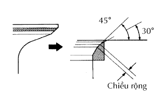
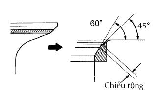
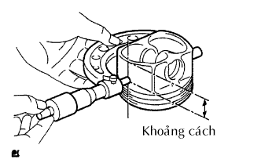

ĐỘNG CƠ > SỬA CHỮA |
| 1. SỬA CHỮA ĐẾ XUPÁP NẠP |
 |
Bôi một lớp mỏng bột màu lên bề mặt xupáp.
Ấn nhẹ mặt xupáp tì vào đế xupáp.
Kiểm tra mặt xupáp và đế xupáp theo các quy trình sau.
Nếu bột màu xuất hiên quanh toàn bộ bề mặt xupáp, thì mặt xupáp là đồng tâm. Nếu không, hãy thay thế xupáp.
Nếu bột màu xuất hiên quanh toàn bộ bề đế xupáp, thì dẫn hướng và mặt xupáp là đồng tâm. Nếu không, hãy rà lại đế xupáp.
Kiểm tra rằng mặt tiếp xúc đế xupáp nằm giữa của mặt xupáp có độ rộng từ 1.0 đến 1.4 mm (0.039 đến 0.055 in.).
|  |
Nếu phần đế quá cao trên mặt xupáp, hãy dùng lưỡi cắt 30° và 45° để sửa lại đế xupáp.
|  |
Nếu đế quá thấp trên mặt xupápm hãy dùng lưỡi cắt 60° và 45° để sửa lại đế xupáp.
Rà xupáp và đế bằng bột rà.
Kiểm tra định vị của đế xupáp.
| 2. SỬA CHỮA ĐẾ XUPÁP XẢ |
 |
Bôi một lớp mỏng bột màu lên bề mặt xupáp.
Ấn nhẹ mặt xupáp tì vào đế xupáp.
Kiểm tra mặt xupáp và đế xupáp theo các quy trình sau.
Nếu bột màu xuất hiên quanh toàn bộ bề mặt xupáp, thì mặt xupáp là đồng tâm. Nếu không, hãy thay thế xupáp.
Nếu bột màu xuất hiên quanh toàn bộ bề đế xupáp, thì dẫn hướng và mặt xupáp là đồng tâm. Nếu không, hãy rà lại đế xupáp.
Kiểm tra rằng mặt tiếp xúc đế xupáp nằm giữa của mặt xupáp có độ rộng từ 1.0 đến 1.4 mm (0.039 đến 0.055 in.).
Nếu phần đế quá cao trên mặt xupáp, hãy dùng lưỡi cắt 30° và 45° để sửa lại đế xupáp.
Nếu đế quá thấp trên mặt xupápm hãy dùng lưỡi cắt 60° và 45° để sửa lại đế xupáp.
Rà xupáp và đế bằng bột rà.
Kiểm tra định vị của đế xupáp.
| 3. DOA XI LANH |
|  |
Chuẩn bị 4 píttông lên cốt mới.
Dùng Panme, đo đường kính píttông tại vị trí vuông góc với đường tâm của píttông và cách đỉnh của píttông một khoảng nhất định.
Hãy tính toán lượng cần doa lại mỗi xi lanh.
Doa và mài khôn các xi lanh theo các giá trị tính toán.